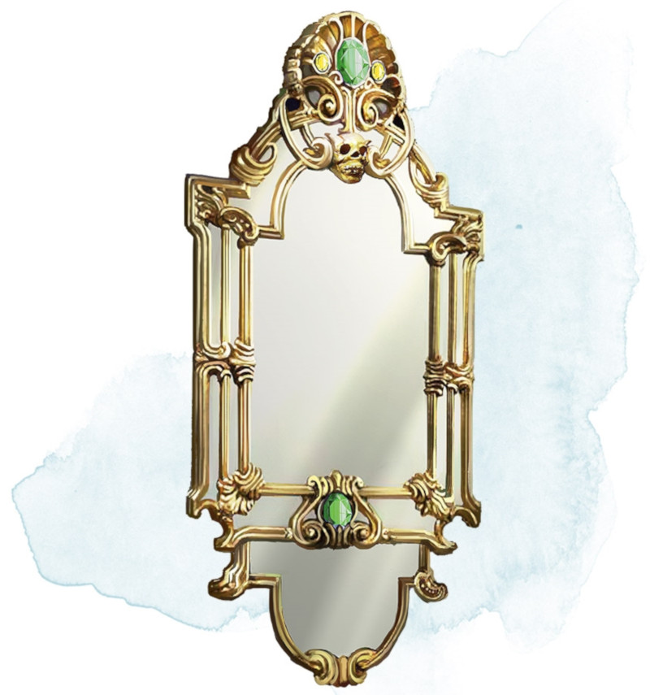

Mirror of Life Trapping
Wondrous item, very rare
When this 4-foot-tall mirror is viewed indirectly, its surface shows faint images of creatures. The mirror weighs 50 pounds, and it has AC 11, 10 hit points, and vulnerability to bludgeoning damage. It shatters and is destroyed when reduced to 0 hit points.
If the mirror is hanging on a vertical surface and you are within 5 feet of it, you can use an action to speak its command word and activate it. It remains activated until you use an action to speak the command word again.
Any creature other than you that sees its reflection in the activated mirror while within 30 feet of it must succeed on a DC 15 Charisma saving throw or be trapped, along with anything it is wearing or carrying, in one of the mirror's twelve extradimensional cells. This saving throw is made with advantage if the creature knows the mirror's nature, and constructs succeed on the saving throw automatically.
An extradimensional cell is an infinite expanse filled with thick fog that reduces visibility to 10 feet. Creatures trapped in the mirror's cells don't age, and they don't need to eat, drink, or sleep. A creature trapped within a cell can escape using magic that permits planar travel. Otherwise, the creature is confined to the cell until freed.
If the mirror traps a creature but its twelve extradimensional cells are already occupied, the mirror frees one trapped creature at random to accommodate the new prisoner. A freed creature appears in an unoccupied space within sight of the mirror but facing away from it. If the mirror is shattered, all creatures it contains are freed and appear in unoccupied spaces near it.
While within 5 feet of the mirror, you can use an action to speak the name of one creature trapped in it or call out a particular cell by number. The creature named or contained in the named cell appears as an image on the mirror's surface. You and the creature can then communicate normally.
In a similar way, you can use an action to speak a second command word and free one creature trapped in the mirror. The freed creature appears, along with its possessions, in the unoccupied space nearest to the mirror and facing away from it.
If the mirror is hanging on a vertical surface and you are within 5 feet of it, you can use an action to speak its command word and activate it. It remains activated until you use an action to speak the command word again.
Any creature other than you that sees its reflection in the activated mirror while within 30 feet of it must succeed on a DC 15 Charisma saving throw or be trapped, along with anything it is wearing or carrying, in one of the mirror's twelve extradimensional cells. This saving throw is made with advantage if the creature knows the mirror's nature, and constructs succeed on the saving throw automatically.
An extradimensional cell is an infinite expanse filled with thick fog that reduces visibility to 10 feet. Creatures trapped in the mirror's cells don't age, and they don't need to eat, drink, or sleep. A creature trapped within a cell can escape using magic that permits planar travel. Otherwise, the creature is confined to the cell until freed.
If the mirror traps a creature but its twelve extradimensional cells are already occupied, the mirror frees one trapped creature at random to accommodate the new prisoner. A freed creature appears in an unoccupied space within sight of the mirror but facing away from it. If the mirror is shattered, all creatures it contains are freed and appear in unoccupied spaces near it.
While within 5 feet of the mirror, you can use an action to speak the name of one creature trapped in it or call out a particular cell by number. The creature named or contained in the named cell appears as an image on the mirror's surface. You and the creature can then communicate normally.
In a similar way, you can use an action to speak a second command word and free one creature trapped in the mirror. The freed creature appears, along with its possessions, in the unoccupied space nearest to the mirror and facing away from it.
Dungeon Master´s Guide (SRD)
